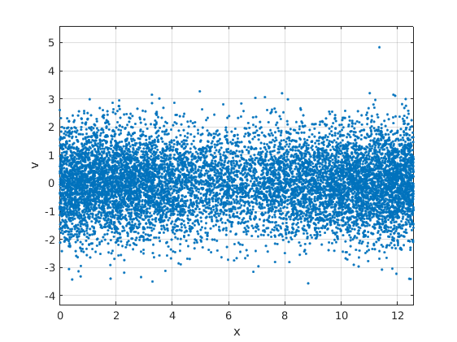
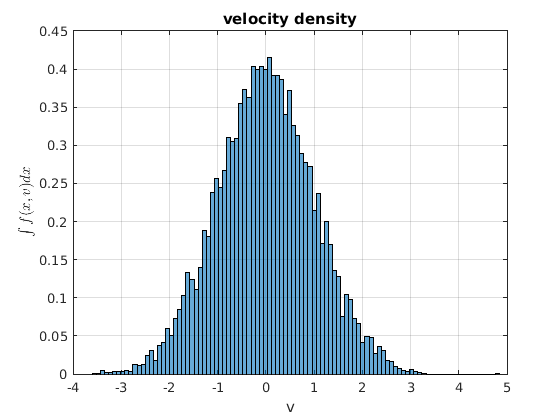
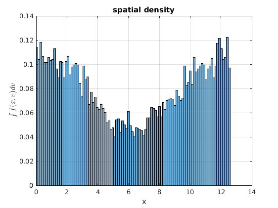
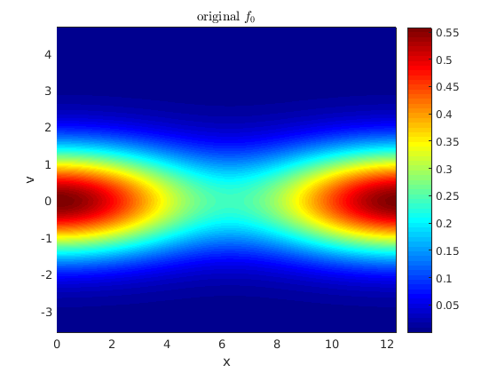
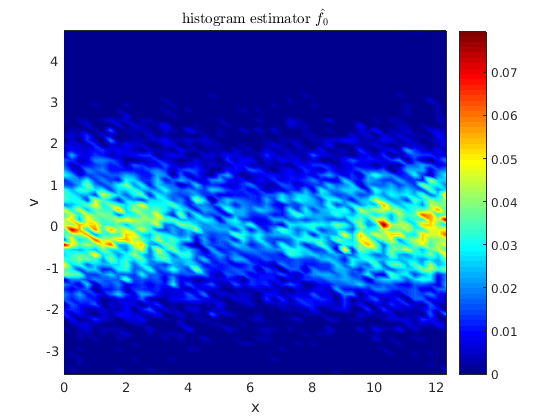

Sample initial conditions by Metropolis-Hastings
Author: Jakob Ameres jakobameres.com
Contents
Initialize random seed to get same result every time
rng(0);
Markov Chain Monte Carlo
Metropolis-Hastings algorithm
Np=1e4; % Number of particles/samples sigma=2; % % Burn in phase. Skip samples at the beginning until the Markov chain % starts to mix % burnin=100;
Thinning. Skip samples to reduce correlation
thin=10;
Define a proposal density, here a Gaussian this means the markov chain will jump with normally distributed increases.
Q=@(x,mu) exp(-0.5.*sum(x-mu,1).^2/sigma^2)/sqrt(2*pi)/sigma^2;
The initial condition for the Landau damping example. k wave vector, L length of domain, eps amplitude of disturbance, f0(x,v) initial condition
k=0.5; L=2*pi/k; eps=0.4; f0=@(x,v) (1+eps*cos(k*x))./sqrt(2*pi).*exp(-0.5.*v.^2); pdf=@(z) f0(z(1,:),z(2,:)); zk=zeros(2,Np); % Phase space coordinate _z_=(_x_,_v_) z_old=[0;0]; % Starting point for idx=-burnin:1:Np for jdx=1:thin %Draw from Q z_new=randn(2,1)*sigma + z_old; a=pdf(z_new)./pdf(z_old)*Q(z_old,z_new)./Q(z_new,z_old); if (a>=1) z_old=z_new; else % % accept sample with probability _a_ % if (rand(1,1)<=a) % accept z_old=z_new; else z_old=z_old; end end end if (idx>=1) zk(:,idx)=z_old; end end
Apply periodic boundary condition in first dimension
zk(1,:)=mod(zk(1,:),L);
Plot samples in phase space
figure; title('Metropolis-Hastings samples'); plot(mod(zk(1,:),L),zk(2,:),'.'); xlabel('x'); ylabel('v'); axis([0,L,-inf,inf]); axis equal; grid on;
Visualize marginal distributions
We use a histogram with 100 particles per cell, and normalize the output such that we obtain the marginal probability density (pdf).
figure; histogram(zk(2,:),Np/100,'Normalization','pdf'); grid on; xlabel('v'); ylabel(' $\int f(x,v) dx$','interpreter','latex') title('velocity density'); figure; histogram(zk(1,:),Np/100,'Normalization','pdf'); grid on; xlabel('x'); ylabel('$\int f(x,v) dv$','interpreter','latex') title('spatial density'); 
Visualize phase space
with a phase space histogram
Parameters
numx=50; %Number of cells in x numv=70; %Number of cells in v
Adapt the velocity bin range to the data.
vmin=min(zk(2,:)); vmax=max(zk(2,:)); % Initialization x=linspace(0,L,numx+1); %Bin edges can be nonuniform v=linspace(vmin,vmax,numv+1); [xx,vv]=ndgrid(x(1:end-1),v(1:end-1)); % mesh %Determine cell volume vol=diff(x)'*diff(v);
Kernel density estimator f0_hat of f0 by a 2D histogram
weight=ones(Np,1); %Importance sampling by Metropolis hastings, up to % normalizing constant [~,cellx]=histc(zk(1,:).',x); %bin particles to cells [~,cellv]=histc(zk(2,:).',v); % and get the indicies %particles out of range are remapped, but not discarded cellv=min(max(1,cellv), numv); %Accumulate weight in boxes and normalize f0_hat=accumarray( [cellx,cellv], weight,... [numx, numv])./vol./Np;
Compare sampled density with original
figure; pcolor(xx,vv,f0(xx,vv)); xlabel('x');ylabel('v'); title('original $f_0$','interpreter','latex') shading interp; colormap jet; colorbar; figure; pcolor(xx,vv,f0_hat); xlabel('x');ylabel('v'); title('histogram estimator $\hat{f}_0$','interpreter','latex') shading interp; colormap jet; colorbar; 